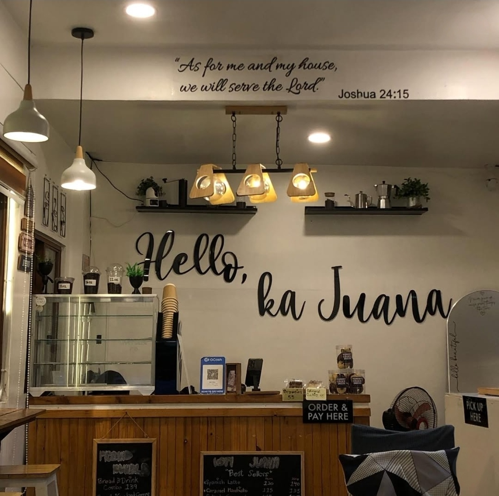
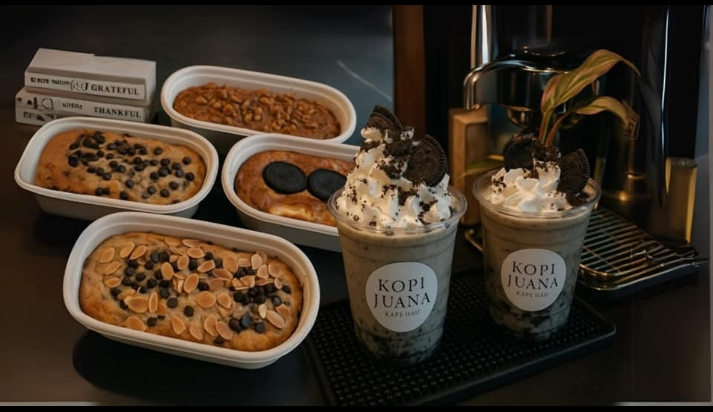
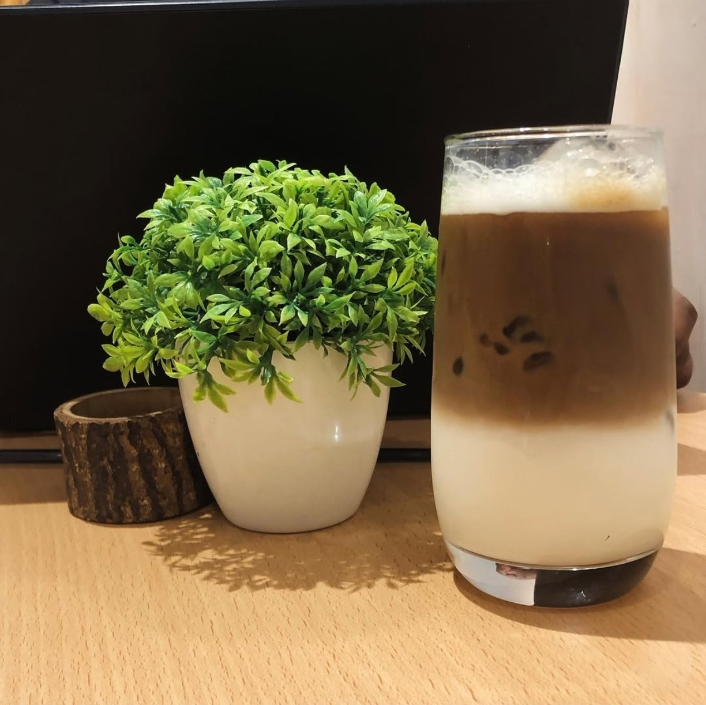
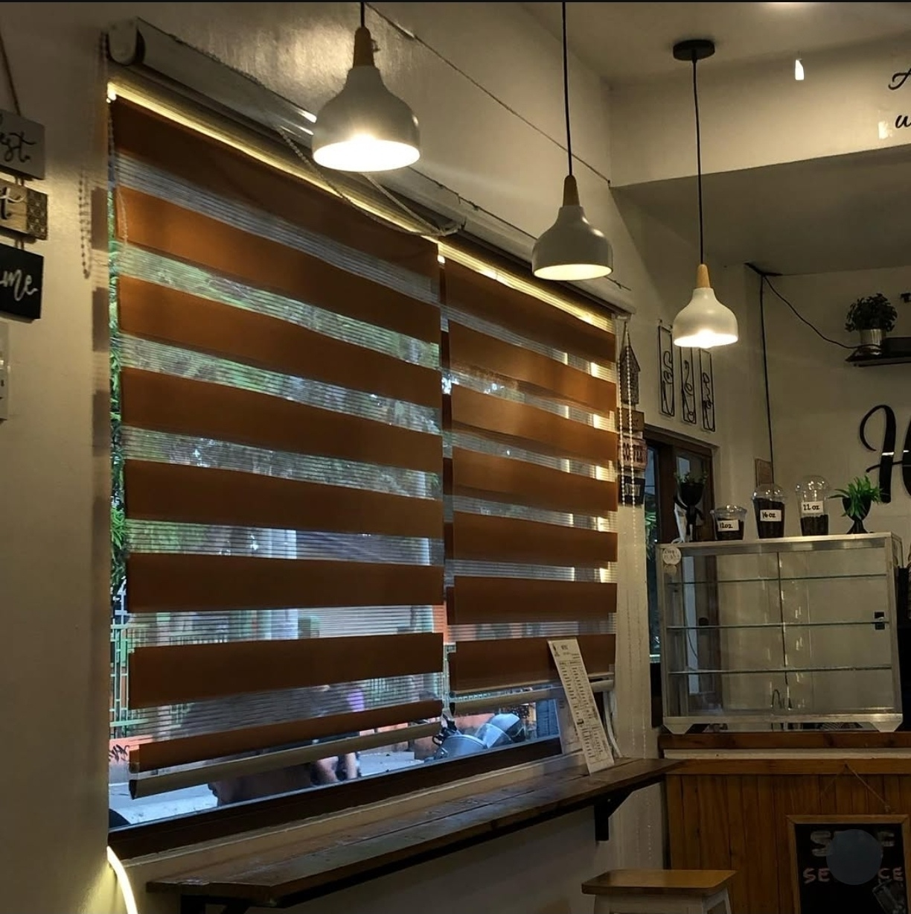
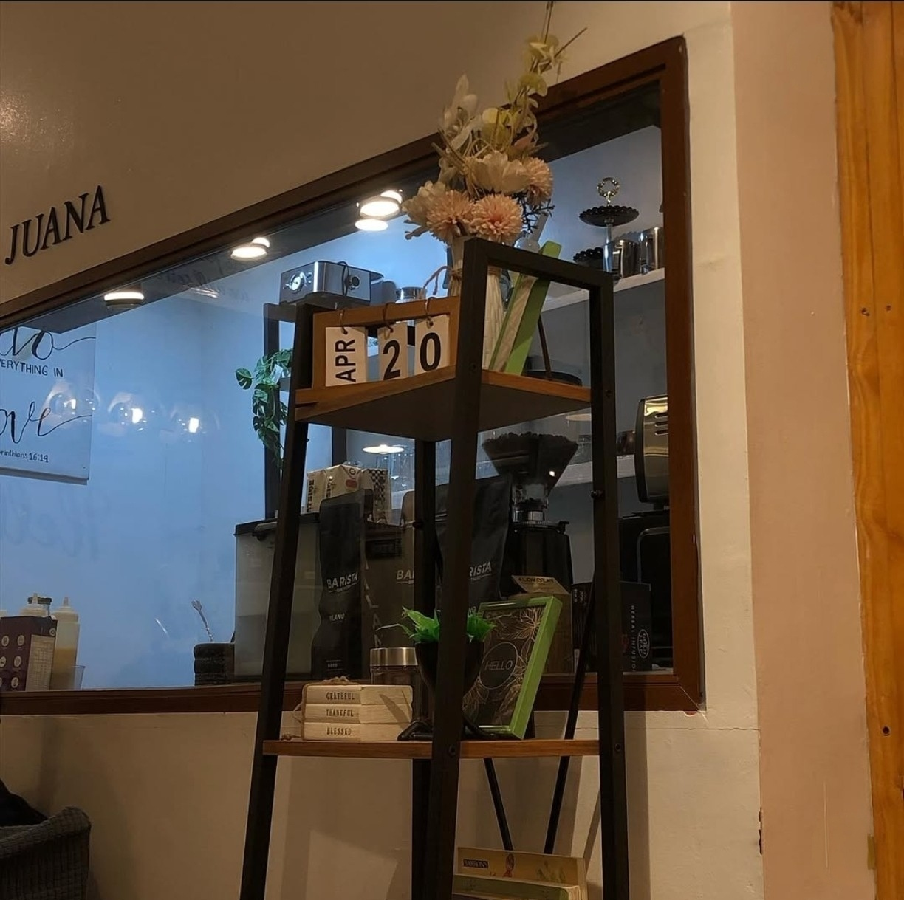
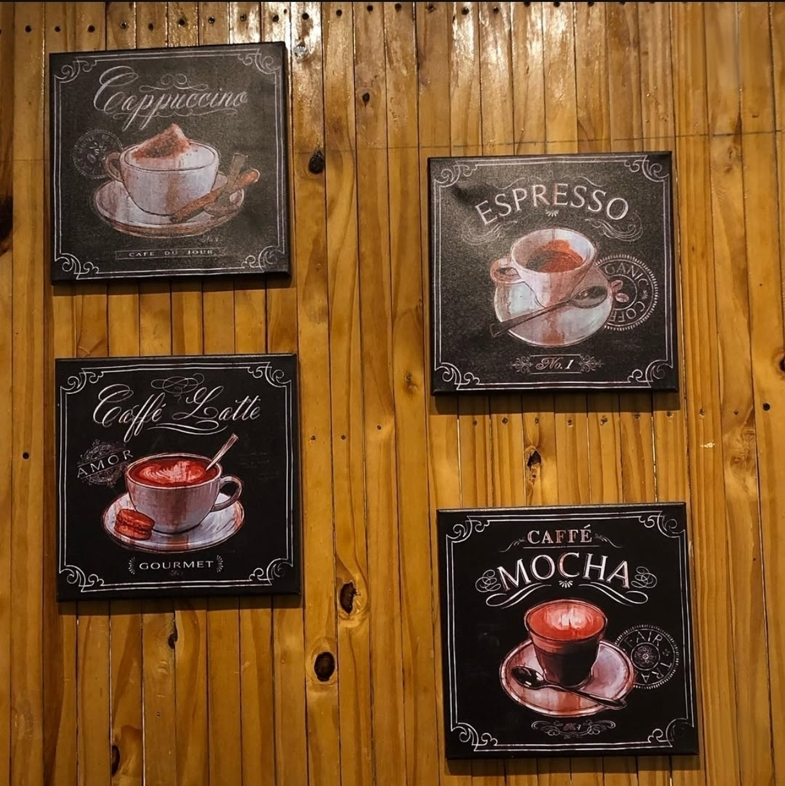
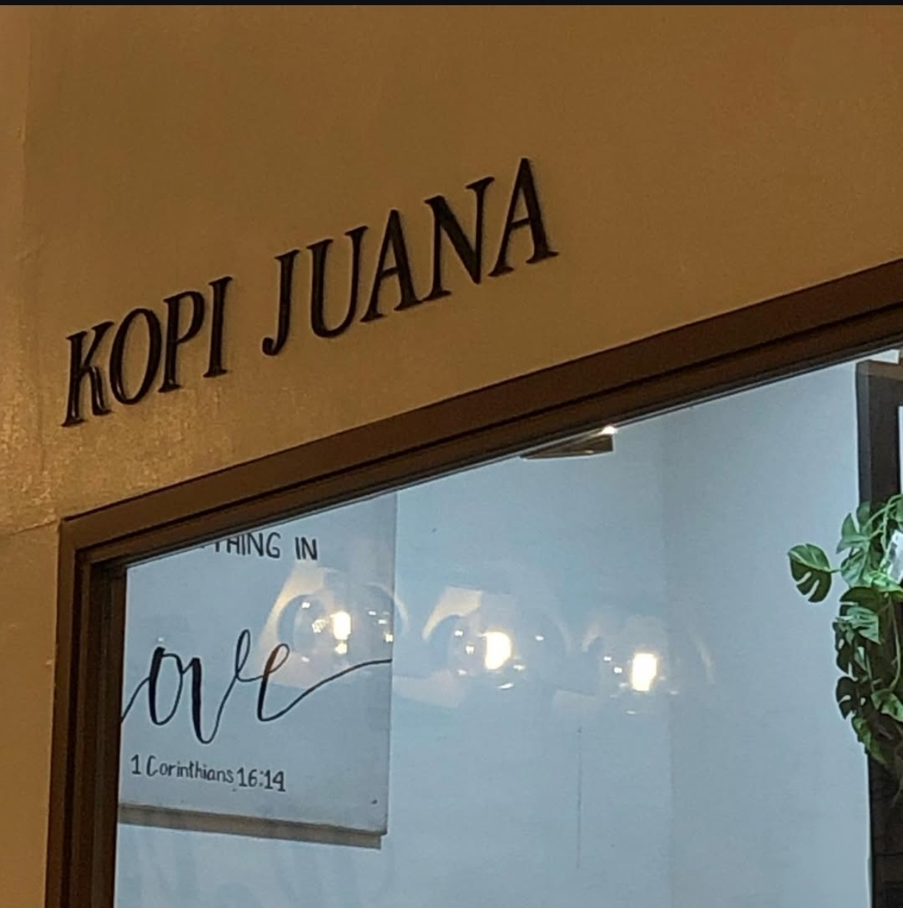
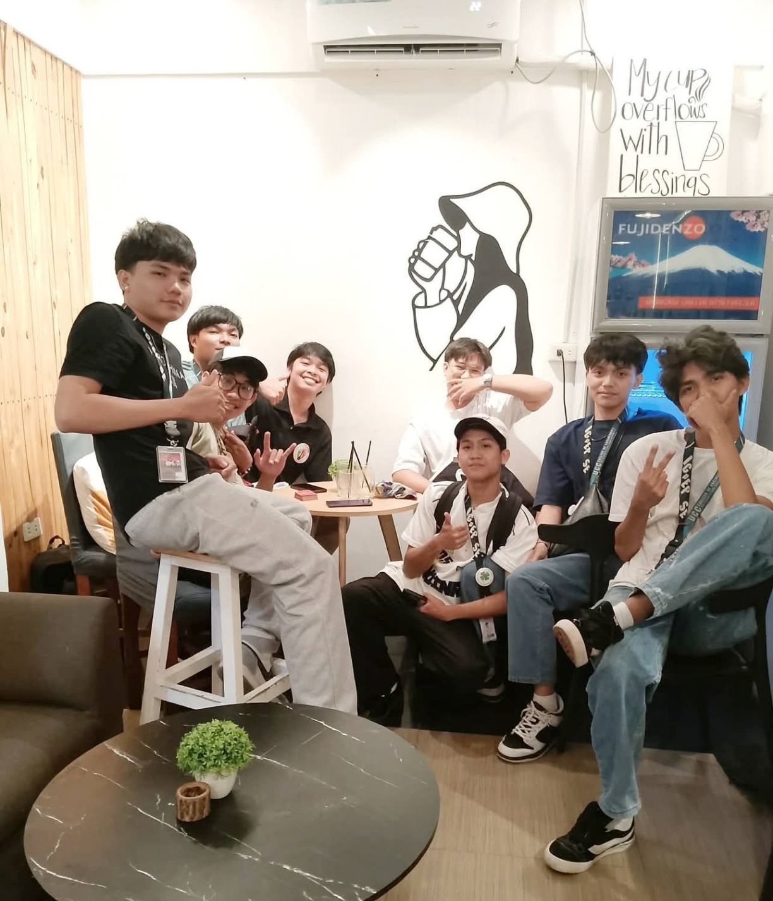

Cozy coffee moments
Good for dine-in, quiet tambay, and after-class catch-ups.
Neighborhood café in Tala
Kopi Juana is made for chill afternoons, catch-ups, study breaks, and quiet coffee moments. The space feels calm, welcoming, and easy to come back to.

Kopi Juana — where afternoons turn into cozy nights. Open daily from 1 PM to 12 MN, serving bold coffee, fresh pastries, and the perfect place to unwind.
About the café
Kopi Juana brings together coffee, pastries, warm lighting, wood textures, and a relaxed atmosphere that works well for barkada hangouts, solo tambay, or quiet coffee runs.
The space feels personal and calm, with a soft neutral palette, homey corners, and details that make the café look approachable and memorable.





The space
The café visuals lean into cream walls, brown wood, dark accents, and a quiet premium feel. That same mood guides this layout so the page still feels connected to the actual shop.
See more updates on Facebook ↗Services & specialties
Good for dine-in, quiet tambay, and after-class catch-ups.
Best paired with coffee for a simple café snack setup.
Warm lighting and a relaxed interior that fits late afternoons and evening visits.
Main action is direct Facebook redirection for inquiries, updates, and new posts.
Shop reel
Watch a short clip from Kopi Juana. The video starts automatically when the browser allows it, and you can turn the sound on with one tap.
Gallery


Stay connected